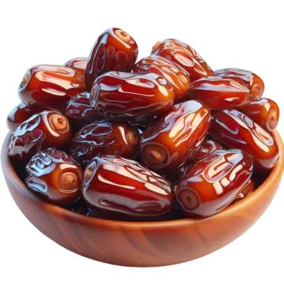
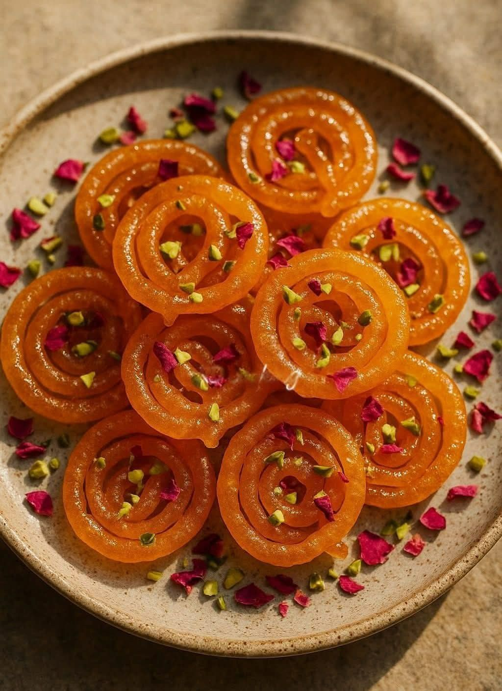
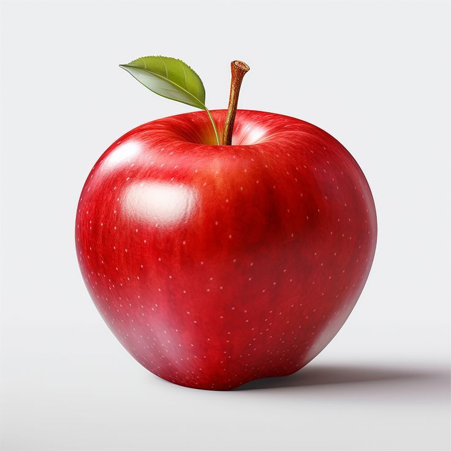
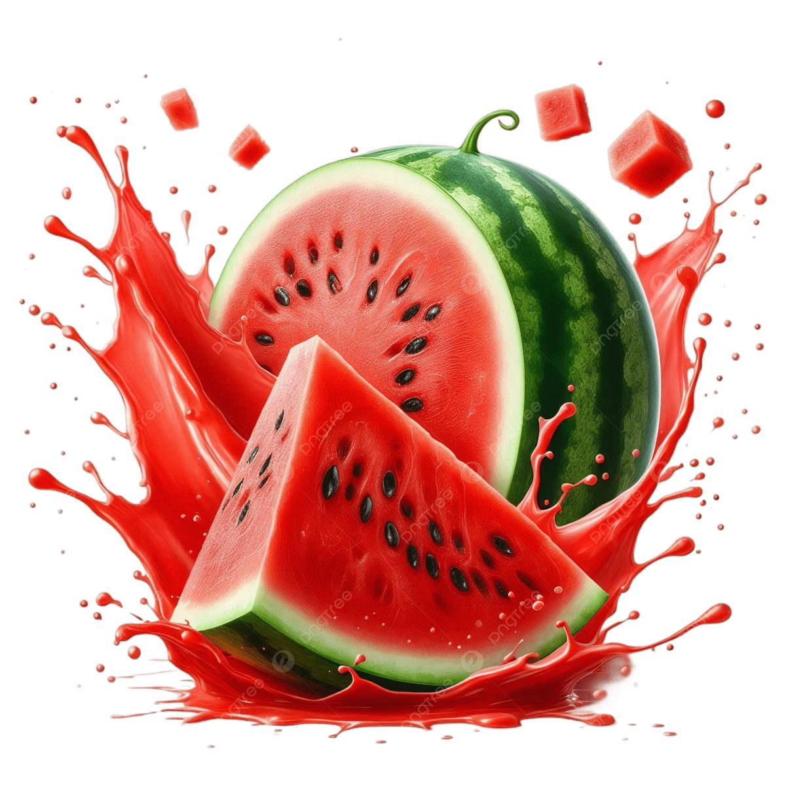

Our Iftar Menu

Date (Khejur)
Date fruit (Phoenix dactylifera) is a nutrient-dense, sweet, and chewy fruit derived from the date palm tree, which has been cultivated for over 6,000 years, primarily in the arid regions of the Middle East and North Africa. Known as "nature's candy," these fruits are a vital source of energy, often containing over 70% carbohydrates (fructose and glucose), making them ideal for quick energy replenishment.

Jilapi
Jilapi (or Jalebi) is a beloved, traditional sweet snack popular throughout South Asia, particularly in Bangladesh and India, renowned for its crispy, spiral-shaped texture and intense sweetness. Made by deep-frying a fermented batter of all-purpose flour in circular shapes, it is immediately soaked in hot sugar syrup—often flavored with saffron, cardamom, or rose water—resulting in a treat that is crunchy on the outside and juicy on the inside.

Apple
Date fruit (Phoenix dactylifera) is a nutrient-dense, sweet, and chewy fruit derived from the date palm tree, which has been cultivated for over 6,000 years, primarily in the arid regions of the Middle East and North Africa. Known as "nature's candy," these fruits are a vital source of energy, often containing over 70% carbohydrates (fructose and glucose), making them ideal for quick energy replenishment.

WaterMelon
Date fruit (Phoenix dactylifera) is a nutrient-dense, sweet, and chewy fruit derived from the date palm tree, which has been cultivated for over 6,000 years, primarily in the arid regions of the Middle East and North Africa. Known as "nature's candy," these fruits are a vital source of energy, often containing over 70% carbohydrates (fructose and glucose), making them ideal for quick energy replenishment.